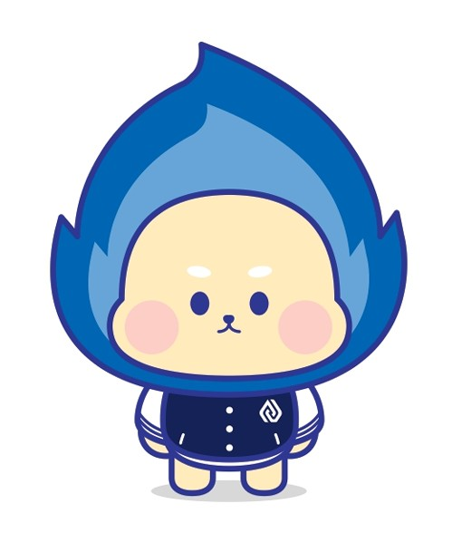

아주대 주변 식당 메뉴 추천&리뷰
🌙 다크 모드
룰렛 모드
초기 화면
면요리
함흥냉면 메탄점
이모네 칼국수
큰집멸치국수
키와마루아지
도이라멘
멘야고코로
아주쌀국수
츠츠
송탄 츠바오
밥요리
할머니 부대찌개
대전순대 24시
신의주 찹쌀순대
감성 뼈다귀
호식당
어송스시
고기 요리
엉클돈가스
한조카츠
소고
고고삼겹
아웃닭
운로
하남돼지집
빨간석쇠구이
킨킨치킨
태영생막창
기타
OBPC
환영합니다!
왼쪽의 식당 이름을 클릭하면 설명이 여기에 표시됩니다.
프랜차이즈 식당은 포함하지 않았습니다.
제작자가 평가하는 태그와 별점이 있습니다.
